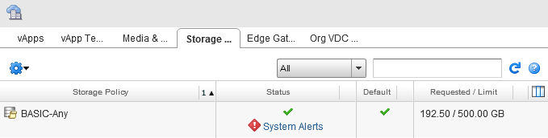
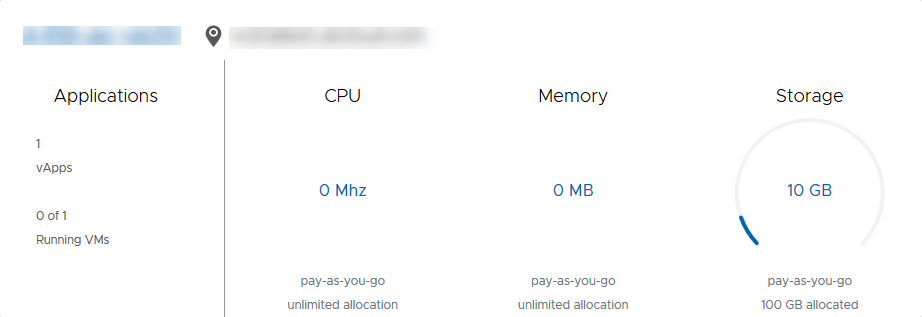

How to view storage profile usage
Overview
Before allocating more disk space in your UKCloud for VMware account, it is useful to check how much of your allocated space has been used.
Viewing your storage usage (vCloud Director 8.20)
In vCloud Director, select the Administration tab.

Right-click your virtual data centre and select Open.
Select the Storage Policies tab.
The Requested/Limit column shows how much storage has been used as well as your storage limit.

Viewing your storage usage (vCloud Director 9.1)
In the vCloud Director Virtual Datacenters dashboard, go to the card for your data centre.
The Storage section shows how much storage you're currently using as well as the amount of allocated storage.

Viewing your storage usage (vCloud API)
To check your storage profile usage programmatically, you need to call the appropriate vCloud REST API endpoint.
Note
Before calling this endpoint, you must first authenticate your session as described in How to access vCloud Director through the vCloud API.
We've provided some sample code to show how to make this call on our GitHub repository.
The using_curl.md page provides an example of how to use CURL to call the REST API. The example assumes that you have set up the following three environment variables to hold your user credentials:
VCD_ORGVCD_USERNAMEVCD_PASSWORD
The example makes two calls to the API. The first call authenticates the session:
curl -u %VCD_USERNAME%@%VCD_ORG%:%VCD_PASSWORD% -H "Accept: application/*+xml;version=5.6" -X POST -i https://api.vcd.portal.skyscapecloud.com/api/sessions
Tip
On Linux, use $VCD_USERNAME instead of %VCD_USERNAME%.
Having authenticated successfully and received an x-vcloud-authorisation header in the response, the second call passes the authentication token as a header on the request:
curl -H "x-vcloud-authorization: a1b2c3d4e5f6a7b8c9d0e1f2a3b4c5d6" -H "Accept: application/*+xml;version=5.6" -i https://api.vcd.portal.skyscapecloud.com/api/query?type=orgVdcStorageProfile
This call returns an XML structure, in which you can see an OrgVdcStorageProfileRecord element containing the following properties:
storageLimitMB="512000" storageUsedMB="65536"
The GitHub repository also provides a ruby example. Again, the script assumes the above environment variables have been set up with your user credentials.
You can use the ruby script by running:
ruby storage_profile.rb
The output will look similar to the following:
Name Used GB Total GB Percent VDC
BASIC-Any 192 500 38.5% XXXX
Feedback
If you have any comments on this document or any other aspect of your UKCloud experience, send them to products@ukcloud.com.